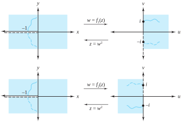
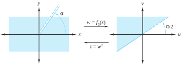
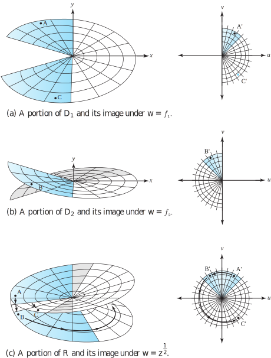

In Section 2.2 we defined the principal square root function and investigated some of its properties. We left unanswered some questions concerning the choices of square roots. We now look at these questions because they are similar to situations involving other elementary functions.
In our definition of a function in Section 2.1, we specified that each value of the independent variable in the domain is mapped onto one and only one value in the range. As a result, we often talk about a single-valued function, which emphasizes the “only one” part of the definition and allows us to distinguish such functions from multiple-valued functions, which we now introduce.
Let \(w=f(z)\) denote a function whose domain is the set \(D\) and whose range is the set \(R\text{.}\) If \(w\) is a value in the range, then there is an associated inverse relation \(z=g(w)\) that assigns to each value \(w\) the value (or values) of \(z\) in \(D\) for which the equation \(f(z)=w\) holds. But unless \(f\) takes on the value \(w\) at most once in \(D\) , then the inverse relation \(g\) is necessarily many valued, and we say that \(g\) is a multivalued function. For example, the inverse of the function \(w=f(z)=z^2\) is the square root function \(z=g(w)=w^{\frac{1}{2}}\text{.}\) For each value \(z\) other than \(z=0\text{,}\) then, the two points \(z\) and \(-z\) are mapped onto the same point \(w=f(z)\text{;}\) hence \(g\) is, in general, a two-valued function.
The study of limits, continuity, and derivatives loses all meaning if an arbitrary or ambiguous assignment of function values is made. For this reason we did not allow multivalued functions to be considered when we defined these concepts. When working with inverse functions, you have to specify carefully one of the many possible inverse values when constructing an inverse function, as when you determine implicit functions in calculus. If the values of a function \(f\) are determined by an equation that they satisfy rather than by an explicit formula, then we say that the function is defined implicitly or that \(f\) is an implicit function. In the theory of complex variables we present a similar concept.
We now let \(w=f(z)\) be a multiple-valued function. A branch of \(f\) is any single-valued function \(f_0\) that is continuous in some domain (except, perhaps, on the boundary). At each point \(z\) in the domain, it assigns one of the values of \(f(z)\text{.}\)
Example2.4.1.
We consider some branches of the two-valued square root function \(f(z) =z^{\frac{1}{2}}\)\((z \ne 0)\text{.}\) Define the principal square root function as
where \(r=|z|\) and \(\theta =\mathrm{Arg}(z)\) so that \(-\pi \lt \theta \le \pi\text{.}\) The function \(f_1\) is a branch of \(f\text{.}\) Using the same notation, we can find other branches of the square root function. For example, if we let
so \(f_1\) and \(f_2\) can be thought of as “plus” and “minus” square root functions. The negative real axis is called a branch cut for the functions \(f_1\) and \(f_2\text{.}\) Each point on the branch cut is a point of discontinuity for both functions \(f_1\) and \(f_2\text{.}\)
Example2.4.2.
Show that the function \(f_1\) is discontinuous along the negative real axis.
Solution.
Let \(z_0=r_0e^{i\pi}\) denote a negative real number. We compute the limit as \(z\) approaches \(z_0\) through the upper half-plane \(\{z: \mathrm{Im}(z) >0\}\) and the limit as \(z\) approaches \(z_0\) through the lower half-plane \(\{z:\mathrm{Im}(z) \lt 0\}\text{.}\) In polar coordinates these limits are given by
The two limits are distinct, so the function \(f_1\) is discontinuous at \(z_0\text{.}\)
Remark2.4.3.
Likewise, \(f_2\) is discontinuous at \(z_0\text{.}\) The mappings \(w=f_1(z)\text{,}\)\(w=f_2(z)\text{,}\) and the branch cut are illustrated in Figure 2.4.4.

Figure2.4.4.The branches \(f_1\) and \(f_2\) of \(f(z) = z^{\frac{1}{2}}\)
We can construct other branches of the square root function by specifying that an argument of \(z\) given by \(\theta =\arg z\) is to lie in the interval \(\alpha \lt \theta \le \alpha +2\pi\text{.}\) The corresponding branch is
The branch cut for \(f_{\alpha}\) is the ray \(r \ge 0\text{,}\)\(\theta =\alpha\text{,}\) which includes the origin. The point \(z=0\text{,}\) common to all branch cuts for the multivalued square root function, is called a branch point. The mapping \(w=f_\alpha(z)\) and its branch cut are illustrated in Figure 2.4.5.

Figure2.4.5.The branch \(f_\alpha\) of \(f(z) = z^\frac{1}{2}\)
Subsection2.4.1The Riemann Surface for \(\mathbf{w=z^{\frac{1}{2}}}\)
A Riemann surface is a construct useful for visualizing a multivalued function. It was introduced by G. F. B. Riemann (1826–1866) in 1851. The idea is ingenious—a geometric construction that permits surfaces to be the domain or range of a multivalued function. Riemann surfaces depend on the function being investigated. We now give a nontechnical formulation of the Riemann surface for the multivalued square root function.
Consider \(w=f(z) =z^{\frac{1}{2}}\text{,}\) which has two values for any \(z \ne 0\text{.}\) Each function \(f_1\) and \(f_2\) in Figure 2.4.4 is single-valued on the domain formed by cutting the \(z\) plane along the negative \(x\) axis. Let \(D_1\) and \(D_2\) be the domains of \(f_1\) and \(f_2\text{,}\) respectively. The range set for \(f_1\) is the set \(H_1\) consisting of the right half-plane, and the positive \(v\) axis; the range set for \(f_2\) is the set \(H_2\) consisting of the left half-plane and the negative \(v\) axis. The sets \(H_1\) and \(H_2\) are “glued together” along the positive \(v\) axis and the negative \(v\) axis to form the \(w\) plane with the origin deleted.
We stack \(D_1\) directly above \(D_2\text{.}\) The edge of \(D_1\) in the upper half-plane is joined to the edge of \(D_2\) in the lower half-plane, and the edge of \(D_1\) in the lower half-plane is joined to the edge of \(D_2\) in the upper half-plane. When these domains are glued together in this manner, they form \(R\text{,}\) which is a Riemann surface domain for the mapping \(w=f(z)=z^{\frac{1}{2}}\text{.}\) The portions of \(D_1\text{,}\)\(D_2\text{,}\) and \(R\) that lie in \(\{z:|z|\lt 1\}\) are shown in Figure 2.4.6.
Formation of the Riemann surface for \(w=z^{\frac{1}{2}}\text{:}\) (a) a portion of \(D_1\) and its image under \(w=z^{\frac{1}{2}}\text{;}\) (b) a portion of \(D_2\) and its image under \(w=z^{\frac{1}{2}}\text{;}\) (c) a portion of \(R\) and its image under \(w=z^{\frac{1}{2}}\text{.}\)
The beauty of this structure is that it makes this “full square root function” continuous for all \(z \ne 0\text{.}\) Normally, the principal square root function would be discontinuous along the negative real axis, as points near \(-1\) but above that axis would get mapped to points close to \(i\text{,}\) and points near \(-1\) but below the axis would get mapped to points close to \(-i\text{.}\) As Figure 2.4.6(c) indicates, however, between the point \(A\) and the point \(B\text{,}\) the domain switches from the edge of \(D_1\) in the upper half-plane to the edge of \(D_2\) in the lower half-plane. The corresponding mapped points \(A\,'\) and \(B\,'\) are exactly where they should be. The surface works in such a way that going directly between the edges of \(D_1\) in the upper and lower half-planes is impossible (likewise for \(D_2\)). Going counter-clockwise, the only way to get from the point \(A\) to the point \(C\text{,}\) for example, is to follow the path indicated by the arrows in Figure 2.4.6(c).

Figure2.4.6.Formation of the Riemann surface for \(w=z^\frac{1}{2}\text{:}\) (a) a portion of \(D_1\) and its image under \(w=z^\frac{1}{2}\text{;}\) (b) a portion of \(D_2\) and its image under \(w=z^\frac{1}{2}\text{;}\) (c) a portion of \(R\) and its image under \(w=z^\frac{1}{2}\)
ExercisesExercises
1.
Let \(f_1(z)\) and \(f_2(z)\) be the two branches of the square root function given by Equations (2.4.1) and (2.4.2), respectively. Use the polar coordinate formulas in Section 2.2 to find the image of
(a)
quadrant II, \(x\lt 0\) and \(y>0\text{,}\) under the mapping \(w=f_1(z)\text{.}\)
Solution.
The sector \(\rho >0\text{,}\)\(\pi /4\lt \phi \lt \pi /2\text{.}\)
(b)
quadrant II, \(x\lt 0\) and \(y>0\text{,}\) under the mapping \(w=f_2(z)\text{.}\)
(c)
the right half-plane Re\((z) >0\) under the mapping \(w=f_1(z)\text{.}\)
Solution.
The sector \(\rho >0\text{,}\)\(-\pi /4\lt \phi \lt \pi /4\text{.}\)
(d)
the right half-plane Re\((z) >0\) under the mapping \(w=f_2(z)\text{.}\)
2.
Let \(\alpha =0\) in Equation (2.4.3). Find the range of the function \(w=f_{\alpha}(z)\text{.}\)
3.
Let \(\alpha =2\pi\) in Equation (2.4.3). Find the range of the function \(w=f_{\alpha}(z)\text{.}\)
Solution.
Since \(f_{2\pi}(z) = r^{\frac{1}{2}}\cos \frac{\theta}{2} +ir^{\frac{1}{2}}\sin \frac{\theta}{2}\text{,}\) where \(2\pi \lt \theta \le 4\pi\) (explain!), we see that the point \((r^{\frac{1}{2}}\cos \frac{\theta}{2},\,r^{\frac{1}{2}}\sin \frac{\theta}{2})\) will lie in the lower half plane (again, explain). Thus, the range of \(f_{2\pi}(z)\) is \(\{z:\mathrm{Im}(z) \le 0,\; z \ne 0\}\text{.}\)
4.
Find a branch of the square root that is continuous along the negative \(x\) axis.
5.
Let \(f_1(z) =|z|^{\frac{1}{3}}e^{i \frac{\mathrm{Arg}(z)}{3}} = r^{\frac{1}{3}}\cos \frac{\theta}{3} +ir^{\frac{1}{3}}\sin \frac{\theta}{3}\text{,}\) where \(|z| =r \ne 0\text{,}\) and \(\theta =\mathrm{Arg}(z)\text{.}\)\(f_1\) denotes the principal cube root function.
(a)
Show that \(f_1\) is a branch of the multivalued cube root \(f(z)=z^{\frac{1}{3}}\text{.}\)
Solution.
\(f_1(z) = |z|^{\frac{1 }{3}}e^{i\frac{{\mathrm{Arg}}(z)}{3}}\text{,}\) so \(\big(f_1(z)\big)^3=\left(|z|^{\frac{1}{3}}e^{i\frac{{\mathrm{Arg}}(z)}{3}}\right)^{\!3}=|z|e^{i \frac{{\mathrm{Arg}}(z)}{3}}=z\text{.}\) This shows that \(f_1\) is indeed a branch of the cube root function.
(b)
What is the range of \(f_1\text{?}\)
(c)
Where is \(f_1\) continuous?
6.
Let \(f_2(z) =r^{\frac{1}{3}}\cos (\frac{\theta +2\pi}{3}) +ir^{\frac{1}{3}}\sin (\frac{\theta +2\pi}{3})\text{,}\) where \(r>0\) and \(-\pi \lt \theta \le \pi\text{.}\)
(a)
Show that \(f_2\) is a branch of the multivalued cube root \(f(z) =z^{\frac{1}{3}}\text{.}\)
(b)
What is the range of \(f_2\text{?}\)
(c)
Where is \(f_2\) continuous?
(d)
What is the branch point associated with \(f\text{?}\)
7.
Find a branch of the multivalued cube root function that is different from those in Exercises 5 and 6. State the domain and range of the branch you find.
Solution.
The function \(f_{\frac{\pi}{4}}(z) =r^{\frac{1}{3}}e^{i\frac{\theta}{3}}\text{,}\) where \(0 \ne z = re^{i\theta}\text{,}\) and \(\frac{\pi}{4} \lt \theta \le \frac{9\pi}{4}\) does the job. Explain why, and find the range of this function, or of a different function that you concoct.
8.
Let \(f(z) =z^{\frac{1}{n}}\) denote the multivalued \(n\)th root, where \(n\) is a positive integer.
(a)
Show that \(f\) is, in general, an \(n\)-valued function.
(b)
Write the principal \(n\)th root function.
(c)
Produce a different branch of the multivalued \(n\)th root function.
9.
Describe a Riemann surface for the domain of definition of
(a)
\(w=f(z) =z^{\frac{1}{3}}\text{.}\)
Solution.
For \(k=0,\,1,\,2\) we have \(f_k(z) =e^{i\frac{{\mathrm{Arg}}(z) +2\pi k}{3}}\) as the three branches of the cube root with domains \(D_k=\{z:z \ne 0\}\text{.}\) As in the text, slit each domain along the negative real axis, and stack \(D_0\text{,}\)\(D_1\text{,}\) and \(D_2\) directly above each other. Join the edge of \(D_0\) in the upper half plane to the edge of \(D_1\) in the lower half plane. Join the edge of \(D_1\) in the upper half plane to the edge of \(D_2\) in the lower half plane. Finally, join the edge of \(D_2\) in the upper half plane to the edge of \(D_0\) in the lower half plane. To really impress your teacher, make a sketch or real 3D model of this surface!
(b)
\(w=f(z) =z^{\frac{1}{4}}\text{.}\)
10.
Discuss how Riemann surfaces should be used for both the domain and range to help describe the multivalued function \(w=f(z)=z^{\frac{2}{3}}\text{.}\)